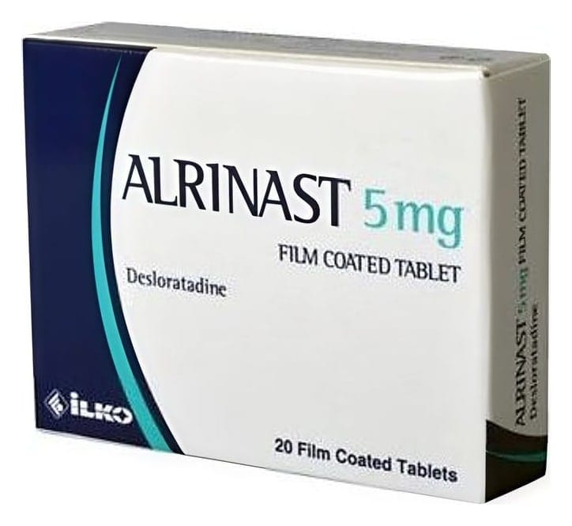

Alrinast 5 mg Film Kaplı Tablet ,20 Adet

Ne için kullanılır
KT · Bölüm 1ALRİNAST, antihistaminik ilaç sınıfından olan desloratadin etkin maddesini içerir.
ALRİNAST, uyku hali oluşturmayan alerjiye karşı kullanılan bir ilaçtır. Alerjik reaksiyonlar ve alerji belirtilerinin kontrol altına alınmasına yardımcı olur.
ALRİNAST, açık mavi renkli, yuvarlak tabletler, 20 tablet içeren blister ambalajlarda sunulmaktadır.
ALRİNAST alerjik nezle ile ilişkili hapşırık, burunda akıntı ve kaşıntı, damakta kaşınma ve gözlerde kaşınma, kızarıklık veya yaşarma gibi belirtileri (örneğin saman nezlesi, ev tozu akarına karşı alerji) giderir.
ALRİNAST ayrıca, ürtiker (alerjiden kaynaklanan bir deri hastalığı) ile birlikte görülen kaşıntı ve derideki kabartı ve kızarıklık gibi belirtilerin ortadan kaldırılmasında endikedir.
Bu belirtiler tüm gün boyunca giderilmiş olur ve normal günlük aktiviteleriniz ve uykunuza yeniden kavuşmanıza yardımcı olur.